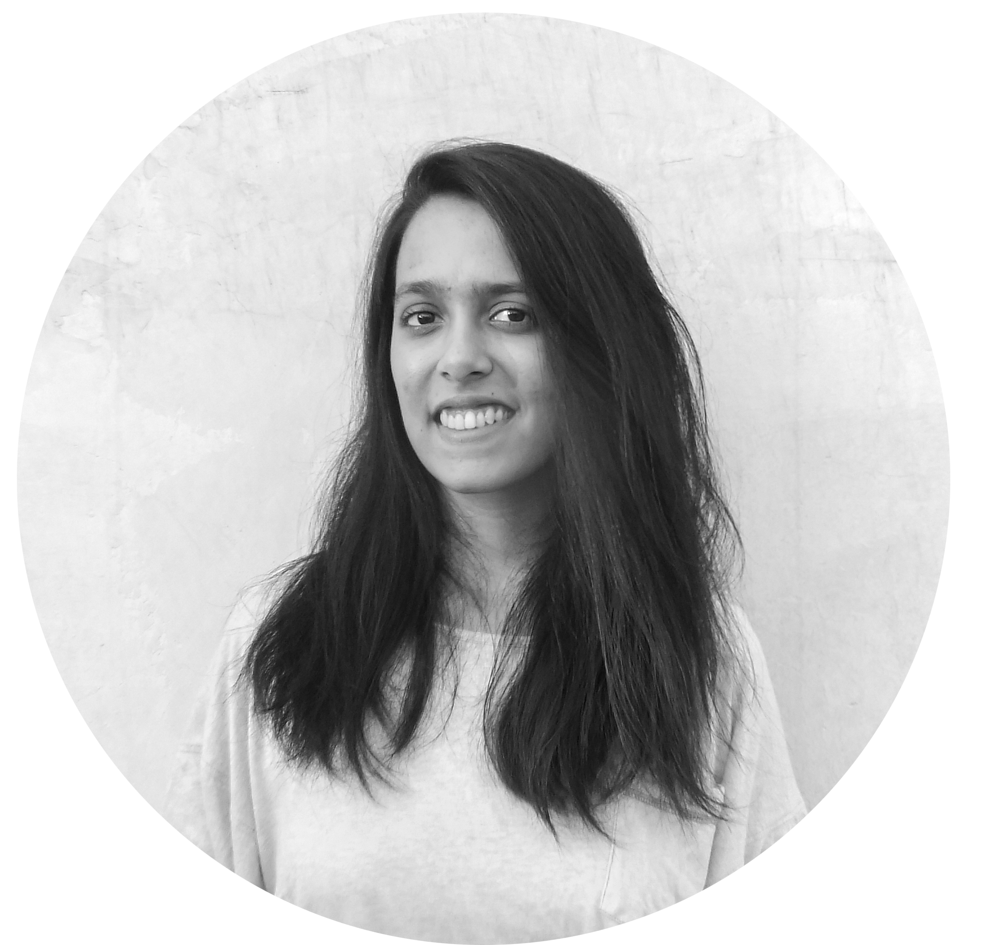

Ishika Joshi.
Designer and Developer
My Name
Hey there, I am Ishika Joshi. I am Computer Science and Design Undergraduate in Indraprastha Institute of Information Technology, Delhi (IIIT-D).
I am a multidisciplinary designer with extensive experience in various fields of design. My primary interests lie in Interaction Design, UX and Design Research.
As a CS and HCI student, I am skilled with various technologies like Mixed Reality, Web Development, Computer Vision, etc. I have exhaustively worked with users and conducted extensive UX research.
Would love to design and develop to understand and cater Human Needs:)
Work Experience
Undergraduate Researcher (Interaction Design ,HCI) / Weave Lab, IIITD
May,2021 - Current
Ideating, Desiging and Prototyping highly interactive products through exhuastive User Research and making use of mixed reality and OpenCV.
Teaching Assistant/ Visual Design and Communication
May,2021 - Current
Assisting over 65 students in their Visual Design and Communication by making use of my Visual Design expertise.
Graphic Design Intern / S-Cube World
May 2020 - September 2020
Interned as a graphic Designer for S-Cube World
UI/UX Designer/ Student Playbook
Jan 2021 - Jun, 2021
Volunteered as UI/UX Designer at Student Playbook, IIITD Student Initiative
My Projects
Tsuru
Tsuru is an AR medium to perform Origami. It provides virtual origami guides to the user in a gamified interactive system. Project entails user research and development.
SURU
Time Management application that is designed considering the needs of the present working class to aid them achieve an efficient work style.
Kurious
Kurious is an educational application aimed at introdusing sex education to 6-9 year olds to sensitize them of the concept of consent.